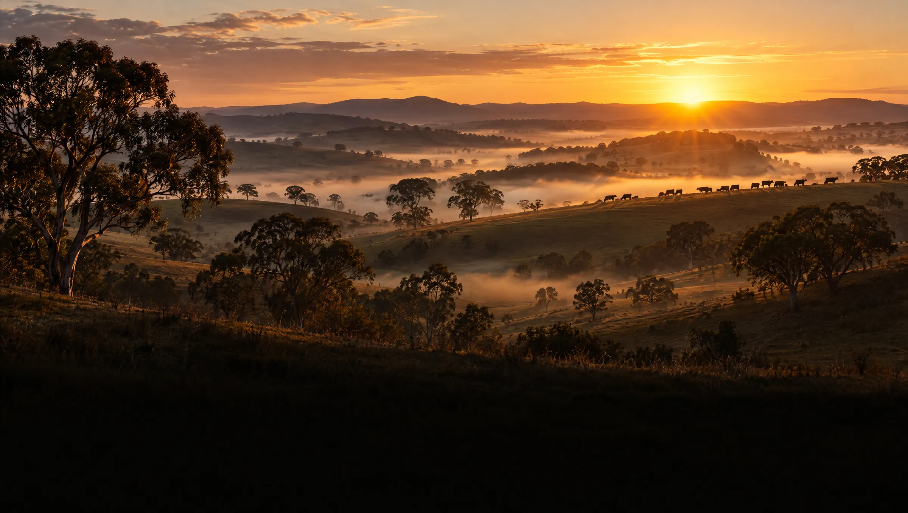
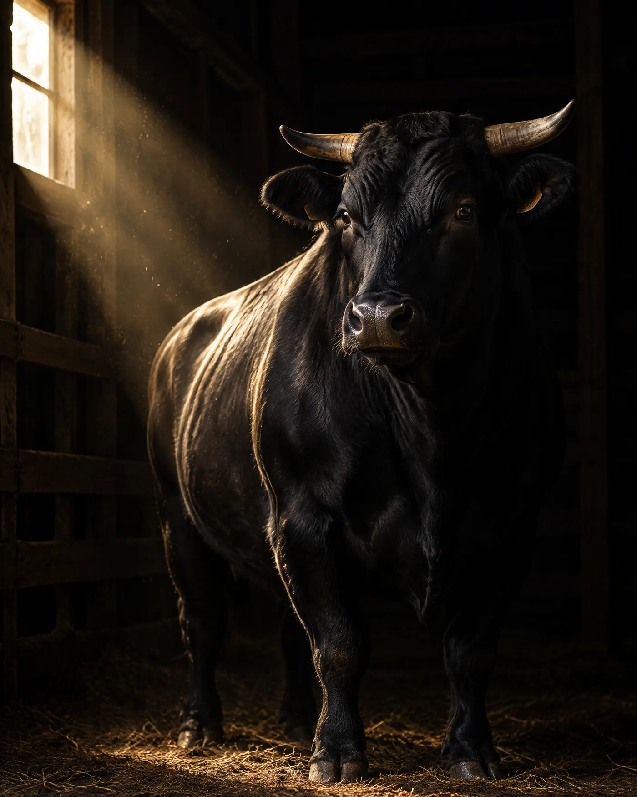
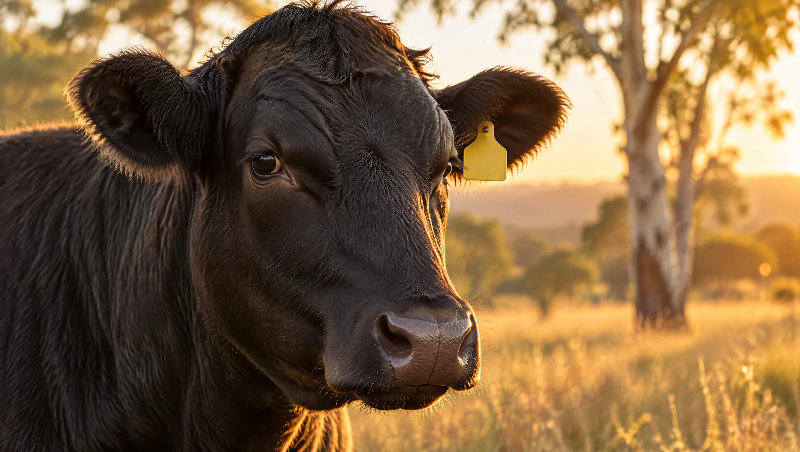

Why Australia
Japanese bloodlines. Australian standards.
All true wagyu begins in Japan. After it left, where it was raised shaped how it is bred, how it is graded and how much its label tells you. This page explains the background behind every Windy City Wagyu cut and why we chose Australia.
01 · The breed
What makes wagyu, wagyu
Wagyu means "Japanese cattle". It refers to four native Japanese breeds: Japanese Black, Japanese Brown, Japanese Shorthorn and Japanese Polled. Japanese Black accounts for about 95% of all wagyu production, and it is the breed behind the world's most marbled beef.
What sets wagyu apart is genetic. These cattle store fat inside the muscle, as a fine web of marbling, rather than around it. That marbling melts as the beef cooks, giving wagyu its tenderness, juiciness and rich, buttery flavor.


02 · The history
How wagyu came to Australia
Japan guards its wagyu closely. A small number of cattle and genetics left the country before the door closed, and Australian breeders have spent more than three decades building on them.
- 1989
The Australian Wagyu Breeders Association is founded with seven members.
- 1990–91
The first wagyu cattle and genetics reach Australia, by way of the United States.
- 1997
Japan declares wagyu a national treasure and restricts all exports of wagyu cattle and genetics.
- 2021
A grading camera developed with Japan's own meat grading association is approved to score Australian wagyu across the full marble score range.
- Today
Australia has the largest fullblood wagyu herd outside Japan.
The bloodlines behind the herd
Japanese wagyu was bred for generations in separate prefectures, and each developed its own bloodline. Australian fullblood wagyu still carries those lines today. The largest share traces back to the Tajima line of Hyogo Prefecture, which is famous for its exceptional marbling.
- TajimaHyogo · largest share of the Australian fullblood herd
- ItozakuraHyogo and Okayama · second-largest share
- Shimane (Fujiyoshi)Medium frame, strong maternal traits
- Tottori (Kedaka)Historically dominant in Japanese registrations
03 · Compare
Japan, Australia and the United States
All three countries produce excellent beef. They follow different rules, and those rules change what you are buying.
| Japanese | Australian | American | |
|---|---|---|---|
| Genetics | Native Japanese breeds, mostly Japanese Black | Japanese bloodlines. The largest fullblood herd outside Japan, plus purebred and crossbred lines | About 85% of wagyu-influenced cattle are crossbred, most often with Angus |
| Marbling scale | Beef Marbling Standard (BMS) 1–12, within a yield (A–C) and quality (1–5) grade. A5 is the top | AUS-MEAT marble score, MS0 to MS9+ | USDA Select, Choice and Prime. There is no wagyu-specific grade |
| What "wagyu" on the label tells you | Native Japanese cattle, plus a grade | At Windy City Wagyu: the bloodline (fullblood, purebred or F1) and the marble score | Anything from a 50% cross to fullblood; the label does not have to say which |
| Eating experience | Extremely rich; most people stop at 4–6 oz | Wagyu richness with more beef flavor, from indulgent to full-portion | Varies widely with the genetics |
| Traceability | Individual cattle records | National Livestock Identification System (NLIS): every animal is tracked from the property where it was born | Depends on the producer |
Compared with Japanese A5
Japanese A5 is extraordinary, and so rich that a few ounces is a full serving. Australian wagyu carries the same bloodlines with a little more beef flavor. Our Black tier reaches the top of the marble score scale, while Gold and White give you wagyu you can enjoy as a full steak.
Compared with American wagyu
Most American wagyu is crossbred, and "wagyu" on a US label does not tell you how much. Australian producers also typically keep cattle on grain for longer. We show the bloodline and the score on every cut, so you always know what you are paying for.
04 · Grading and feeding
Australia has its own scale, and it is graded, not guessed
Australian wagyu is not scored on Japan's BMS scale. It is graded on Australia's official AUS-MEAT marble score, from MS0 to MS9+. A qualified AUS-MEAT grader assesses each carcass.
Since 2021, an objective camera developed in Japan with the Japanese Meat Grading Association has been approved to grade Australian wagyu across the full MS0–MS9+ range. Its reference data comes from more than 30,000 carcasses.
The results show why genetics matter: fullblood wagyu typically grades around MS8, while F1 wagyu × Angus averages MS6 or better.
See our grading scale →Time on grain
Marbling develops slowly. Longer feeding gives it time.
Australian wagyu programs typically feed for 350 to 600 days.
05 · Traceability
Every animal, tracked from birth
Australia's National Livestock Identification System (NLIS) gives every animal lifetime traceability. It works in three parts.
- 01
Tagged at birth
Each animal gets an accredited NLIS ear tag or device on the property where it was born.
- 02
Every property identified
Every farm, saleyard and feedlot has its own Property Identification Code (PIC).
- 03
Every move recorded
A central national database logs each animal's location and every movement between properties.

06 · Glossary
Speak wagyu
- Fullblood
- 100% wagyu. Both parents are fullblood, with Japanese lineage and no crossbreeding, and the bloodline can be DNA-verified. This is our Black tier.
- Purebred
- 93.75% wagyu or more, reached by breeding up over four generations. This is our Gold tier.
- F1 (crossbred)
- The first cross, about 50% wagyu, usually with Angus. This is our White tier.
- Marble score (MS)
- Australia's official AUS-MEAT marbling scale, from MS0 to MS9+. It is the score on every Windy City Wagyu label.
- BMS
- Japan's Beef Marbling Standard, from 1 to 12. It is a different scale from Australia's, with no official conversion between the two.
- A5
- Japan's top grade. "A" is the highest yield grade and "5" is the highest quality grade.
- Kobe
- A protected name for wagyu from Japan's Hyogo Prefecture. It is a place of origin, not a breed or a grade.
- NLIS
- Australia's National Livestock Identification System, which tracks every animal from birth.
- HGP
- Hormone growth promotant. Our cattle are raised without them.
- Days on grain
- How long cattle are grain-finished before harvest. More time on grain gives the marbling longer to develop.
07 · Questions
What people ask us
Is Australian wagyu real wagyu?
Yes. It descends from the same Japanese cattle. Our Black tier is 100% fullblood, with Japanese lineage verified through Australian Wagyu Association pedigree and DNA records.
Is this Kobe beef?
No. Kobe is a protected name for wagyu raised in Hyogo Prefecture, Japan. Much of Australia's fullblood herd descends from Hyogo's Tajima bloodline, but we will never call our beef Kobe, and no wagyu raised outside Hyogo should carry that name.
How does MS9+ compare with Japanese A5?
The two use different scales, so there is no exact conversion. MS9+ is the very top of Australia's scale. Industry guides commonly place it near the top of Japan's BMS scale, the marbling level found in A5.
Why not just buy American wagyu?
There is excellent American beef. But most American wagyu is crossbred, and a US label does not have to tell you how much wagyu is in it. With us, the bloodline and the marble score are always on the label.
Why is the same tier priced differently?
Every animal is graded individually. A Gold MS9+ has more marbling than a Gold MS6, and it is priced to match. The tier tells you the bloodline, and the score tells you how that animal graded.
Does imported mean frozen?
Our wagyu arrives chilled and vacuum-sealed [never frozen: to confirm with producers].

Now you know what to look for.
Choose the bloodline, then the score. Every cut is graded, traced and finished on grain for at least 450 days.